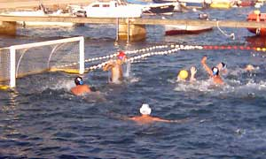
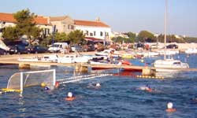

Novosti
Seniori izgubili i od Tisna
1.8.2004.
Nakon gostujućeg poraza u Tisnome seniori Croatie Turanj su pali na posljednje
mjesto na ljestvici III. HVL skupina Šibenik.
Utakmica je završila rezultatom 14:2 za domaćine.
Poraz od Gusara
30.7.2004.
Seniori Croatie Turanj su potopljeni na najtežem gostovanju lige. Ekipa
Gusara je uvjerljivo najjača i zasad ima savršen učinak: svih 5 pobjeda
i gol razliku od 74:23. Po dosad prikazanome oni su glavni kandiati za
prvaka III. HVL skupine Šibenik.
Seniori izgubili od Brodarice
25.7.2004.
Usprkos kiši i prijetećem nevremenu odigrana je utakmica između Croatie
Turanj i Brodarice. Utakmica je završila pobjedom gostiju od 6:2. Unatoč
prohladnom vremenu i burinu gosti su bolje otvorili utakmicu i odmah poveli
(čak su zabili i autogol), a prednost su održavali tako da su kroz veći
dio utakmice u obrani igrali M-zonu i koristili loš dan naših vanjskih
pucača. Naš jedini gol postigao je kapetan Goran Jakov Matulj iz četverca.
Prvi poraz na domaćem terenu
23.7.2004.
Utakmica protiv Primoštena je završila s rezultatom 14:5 za gostujuću
momčad koja je od samog početka pokazala dominaciju i u obrani i u napadu.
Prevagu je donijelo nekoliko lako izgubljenih lopti naših igrača u prvoj
četvrtini preko kojih su gosti i poveli. Nakon toga je u Croatiji pala
motivacija i momčad Primoštena ih je odlično zatvorila čvrstim presingom
koji je pred kraj napada prelazio u zonu. Iako je gostujuća momčad pokazala
malo bolju fizičku pripremljenost presudio je nedovoljno čvrst pristup
naših igrača, koji su zapravo podjednako kvalitetna momčad.
Juniori potopljeni u Zadru
21.7.2004.
U gostujućoj utakmici mlađih juniora protiv Zadra 1952 naša je momčad
izgubila sa rezultatom 22:3. Plivački puno spremniji domaćini lako su
do poluvremena stekli prednost od 15:0, golove postižući uglavnom iz kontranapada
i tako su osigurali mirnu završnicu utakmice. U našoj momčadi najbolji
pojedinac bio je Goran-Jakov Matulj (sa 3 postignuta gola), dok su u momčadi
Zadra po 4 gola postigli kapetan Igor Šarić, Ante-Leo Čatlak, P. Marčinković
i Marino Srzentić. U utakmici je presudila fizička prpremljenost Zadrana
koji imaju treninge tijekom cijele godine.
Prva utakmica na domaćem terenu - pobjeda
20.7.2004.
Odigrana je zaostala utakmica prvog kola III. HVL za seniore, koja je
trebala biti odigrana 16.7.2004.,
između Croatie Turanj i Tisna. Domaćini su svladali Tisno sa 7:5. Iako
se to ne vidi iz rezultata Croatia je odlično počela utakmicu i uvjerljivo
povela (već na poluvremenu je bilo 4:0). U treću četvrtinu su ušli mirno
i na predah otišli sa 6:1. U zadnjoj četvrtini su se domaći igrači malo
opustili, a u igru su ušli i mlađi igrači i tako utakmicu priveli kraju.
Nakon kompletirane tablice i dva odigrana kola
Croatia ima 2 boda, i uz lošu gol razliku ipak stoji solidno na tablici
u kojoj četiri kluba imaju po dva boda.
Seniori izgubili od ZPK
18.7.2004.
Seniori Croatie su u svojoj prvoj utakmici III. lige izgubili od ZPK s
rezultatom 15:2. Zagrepčani su veliku većinu svojih golova postigli iz
kontre i polukontre,i koristeći činjenicu da oni jedini u skupini imaju
treninge tijekom cijele godine. U našoj momčadi je uvjerljivo najbolji
bio golman zahvaljujući kojemu rezultatska razlika nije bila još veća.
Tijekom cijele utakmice je bilo vidljivo da je ZPK mnogo spremnija i kompletnija
ekipa, dok naša ekipa još nije potpuno uigrana i postavljena. Naši su
isprobavali nekoliko rješenja na poziciji centra i beka, i iako nisu pokazali
neku dobru igru ostaje dojam da će slijedeće utakmice donijeti bolje rezultate.
Neriješeno sa Gusaricama
14.7.2004.
Utakmica između mlađih juniora Croatie Turanj i ženske ekipe Gusarica
iz Sv. Filipa i Jakova završila je neriješeno 7:7. U prvom dijelu utakmice
Gusarice su bile uspješnije i na poluvremenu su imale 2 gola prednosti,
ali naša ekipa se u nastavku trgnula i nadoknadila zaostatak unatoč tome
što su pred kraj Gusarice imale i jedan četverac. Za Gusarice su sve golove
postigle dvije igračice: Andrea Brzić (3) i Morena Galešić (4), dok je
kod nas najefikasniji bio Goran Matulj sa 3 gola, a po jedan gol su postigli
Marko Mandić, te Filip i Toni Santini.
Otvorene web stranice Croatie
Turanj
1.7.2004.
Internet stranice vaterpolo kluba Croatia Turanj su 1.7.2004. napokon
postale dostupne nakon što je CARNet
registrirao domenu vkcroatia.hr.
Od sad na www.vkcroatia.hr
možete saznati sve o klubu, utakmicama, igračima i svemu što ima veze
sa klubom.
Počinje vaterpolo sezona
28.6.2004.
U ponedjeljak su počeli treninzi za mlađe kategorije vk Croatie Turanj.
Ždrijeb za raspored utakmica u kategoriji mlađih juniora će se održati
u nedjelju 4.7.2004. u Turnju. Još se točno ne zna koji će sve klubovi
prijaviti ekipu u kategoriji mlađih juniora. Raspored će biti objavljen
na www.vkcroatia.hr.
|